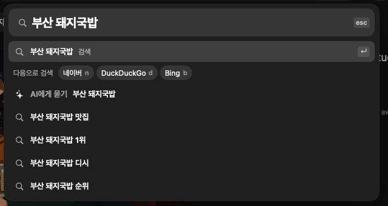
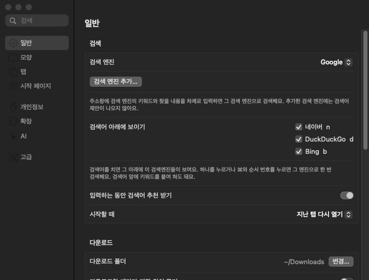

주소창: 검색어를 치면 첫 줄 아래에 다른 검색엔진이 나와요. 누르거나 ⌘1·⌘2·⌘3(주소창이 열려 있을 때만)을 누르면 그 엔진으로 한 번 검색해요. 작은 글자는 키워드라 n 돼지국밥처럼 쳐도 돼요.

설정 › 일반 › 검색: "검색어 아래에 보이기"에서 칩에 나올 검색엔진을 고를 수 있어요. 기본 검색엔진은 첫 줄이 쓰니 목록에 없고, 직접 추가한 검색엔진도 여기에 함께 나와요.
